HDAnalyzeR is an R package developed to streamline and enhance proteomics analysis, particularly for biomarker selection from blood plasma samples. It is developed by and optimized to be used from Human Disease Blood Atlas group internally with Olink proteomics data. This vignette will guide you through the essential steps to use the package, from data loading and quality control to data cleaning, dimensionality reduction, and biomarker identification. Let’s get started by loading the package!
This document introduces you to HDAnalyzeR’s basic set of tools, and shows you how to analyze and identify biomarkers in a dataset of cancer blood plasma samples.
Loading the Data
First, we load the package’s example_data and
example_metadata.
head(example_data)
#> DAid Sample OlinkID UniProt Assay Panel NPX
#> 1 DA00001 AML_syn_1 OID21311 Q9BTE6 AARSD1 Oncology 3.3903461
#> 2 DA00001 AML_syn_1 OID21280 P00519 ABL1 Oncology 2.7588517
#> 3 DA00001 AML_syn_1 OID21269 P09110 ACAA1 Oncology 1.7070090
#> 4 DA00001 AML_syn_1 OID20159 P16112 ACAN Cardiometabolic 0.0332709
#> 5 DA00001 AML_syn_1 OID20105 Q9BYF1 ACE2 Cardiometabolic 1.7553590
#> 6 DA00001 AML_syn_1 OID20124 Q15067 ACOX1 Cardiometabolic -0.9192835
#> Assay_Warning QC_Warning PlateID
#> 1 PASS PASS Run001
#> 2 PASS PASS Run001
#> 3 PASS PASS Run001
#> 4 PASS PASS Run001
#> 5 PASS PASS Run001
#> 6 PASS PASS Run001
head(example_metadata)
#> DAid Sample Disease Stage Grade Sex Age BMI Cohort
#> 1 DA00001 AML_syn_1 AML 2 <NA> F 42 22.7 UCAN
#> 2 DA00002 AML_syn_2 AML Unknown <NA> M 69 33.1 UCAN
#> 3 DA00003 AML_syn_3 AML 2 <NA> F 61 26.2 UCAN
#> 4 DA00004 AML_syn_4 AML Unknown <NA> M 54 28.1 UCAN
#> 5 DA00005 AML_syn_5 AML 2 <NA> F 57 21.4 UCAN
#> 6 DA00006 AML_syn_6 AML Unknown <NA> M 86 33.9 UCAN📓 In real-world scenarios, you would load your own data and metadata files instead of using the example dataset. In order to run the package without issues, make sure that your data include the following columns: DAid, Assay and NPX, while your metadata include the following columns: DAid and Disease. Also, if you have a Sex column in your metadata, the data should be encoded as M and F.
Quality Control (QC)
Data QC
qc_summary_data() provides a comprehensive summary of
the input dataset. It will check the column types, calculate the
percentage of NAs in each column and row, perform normality tests for
all the different Assays, calculate protein-protein correlations, and
create a heatmap of these correlations. Users can also specify the
threshold for reporting protein-protein correlations.
qc_data <- qc_summary_data(example_data, wide = FALSE, threshold = 0.7)
#> [1] "Summary:"
#> [1] "Note: In case of long output, only the first 10 rows are shown. To see the rest display the object with view()"
#> [1] "Number of samples: 586"
#> [1] "Number of variables: 100"
#> [1] "--------------------------------------"
#> [1] "character : 1"
#> [1] "numeric : 100"
#> [1] "--------------------------------------"
#> [1] "NA percentage in each column:"
#> # A tibble: 91 × 2
#> column na_percentage
#> <chr> <dbl>
#> 1 ACE2 6.1
#> 2 ACTA2 6.1
#> 3 ACTN4 6.1
#> 4 ADAM15 6.1
#> 5 ADAMTS16 6.1
#> 6 ADH4 6.1
#> 7 AKR1C4 6.1
#> 8 AMBN 6.1
#> 9 AMN 6.1
#> 10 AOC1 6.1
#> # ℹ 81 more rows
#> [1] "--------------------------------------"
#> [1] "NA percentage in each row:"
#> # A tibble: 144 × 2
#> DAid na_percentage
#> <chr> <dbl>
#> 1 DA00450 57.4
#> 2 DA00482 53.5
#> 3 DA00542 53.5
#> 4 DA00003 50.5
#> 5 DA00463 46.5
#> 6 DA00116 43.6
#> 7 DA00475 42.6
#> 8 DA00578 42.6
#> 9 DA00443 41.6
#> 10 DA00476 35.6
#> # ℹ 134 more rows
#> [1] "--------------------------------------"
#> [1] "Normality test results:"
#> # A tibble: 100 × 4
#> Protein p_value adj.P.Val is_normal
#> <chr> <dbl> <dbl> <lgl>
#> 1 ARID4B 2.00e-21 1.64e-19 FALSE
#> 2 ARTN 4.91e-21 1.64e-19 FALSE
#> 3 ATF2 4.01e-21 1.64e-19 FALSE
#> 4 AZU1 6.02e-20 1.51e-18 FALSE
#> 5 APBB1IP 1.64e-16 3.27e-15 FALSE
#> 6 ADA 2.81e-15 4.69e-14 FALSE
#> 7 ADCYAP1R1 5.75e-15 8.21e-14 FALSE
#> 8 AOC1 2.17e-14 2.71e-13 FALSE
#> 9 AREG 7.47e-14 8.30e-13 FALSE
#> 10 ADGRG1 1.39e-12 1.39e-11 FALSE
#> # ℹ 90 more rows
#> [1] "--------------------------------------"
#> [1] "Protein-protein correlations above 0.7:"
#> Protein1 Protein2 Correlation
#> 1 ATP5IF1 AIFM1 0.76
#> 2 AXIN1 ARHGEF12 0.76
#> 3 AIFM1 ATP5IF1 0.76
#> 4 ARHGEF12 AXIN1 0.76
#> 5 ARHGEF12 AIFM1 0.71
#> 6 AIFM1 ARHGEF12 0.71
#> [1] "--------------------------------------"
#> [1] "Correlation heatmap:"
#> [1] "--------------------------------------"
qc_data$heatmap
Metadata QC
qc_summary_metadata() summarizes quality control results
of the metadata dataframe. It checks the column types, calculates the
percentage of NAs in each column and row exactly as
qc_summary_data(), and creates summary visualizations for
key metadata variables such as Sex, Age, and BMI.
qc_metadata <- qc_summary_metadata(example_metadata, disease_palette = "cancers12")
#> [1] "Summary:"
#> [1] "Note: In case of long output, only the first 10 rows are shown. To see the rest display the object with view()"
#> [1] "Number of samples: 586"
#> [1] "Number of variables: 8"
#> [1] "--------------------------------------"
#> [1] "character : 7"
#> [1] "numeric : 2"
#> [1] "--------------------------------------"
#> [1] "NA percentage in each column:"
#> # A tibble: 1 × 2
#> column na_percentage
#> <chr> <dbl>
#> 1 Grade 91.5
#> [1] "--------------------------------------"
#> [1] "NA percentage in each row:"
#> # A tibble: 536 × 2
#> DAid na_percentage
#> <chr> <dbl>
#> 1 DA00001 11.1
#> 2 DA00002 11.1
#> 3 DA00003 11.1
#> 4 DA00004 11.1
#> 5 DA00005 11.1
#> 6 DA00006 11.1
#> 7 DA00007 11.1
#> 8 DA00008 11.1
#> 9 DA00009 11.1
#> 10 DA00010 11.1
#> # ℹ 526 more rows
#> [1] "--------------------------------------"
#> Sex contains:
#> # A tibble: 19 × 3
#> Disease Sex n
#> <chr> <chr> <int>
#> 1 AML F 23
#> 2 AML M 27
#> 3 BRC F 50
#> 4 CLL F 21
#> 5 CLL M 27
#> 6 CRC F 28
#> 7 CRC M 22
#> 8 CVX F 50
#> 9 ENDC F 50
#> 10 GLIOM F 24
#> 11 GLIOM M 26
#> 12 LUNGC F 33
#> 13 LUNGC M 17
#> 14 LYMPH F 22
#> 15 LYMPH M 28
#> 16 MYEL F 15
#> 17 MYEL M 23
#> 18 OVC F 50
#> 19 PRC M 50
qc_metadata$barplot_Sex
qc_metadata$distplot_Age
#> Picking joint bandwidth of 6.06
Data Cleaning
Data Cleaning
As we saw from the QC results, the data contains NAs and other issues
that need to be addressed. clean_data() preprocesses the
dataset by filtering out rows based on specified criteria. In this case
we will keep only the data which Assay_Warning is “PASS” and only DAid,
Assay and NPX columns.
clean_data <- clean_data(example_data,
keep_cols = c("DAid", "Assay", "NPX"),
filter_assay_warning = TRUE)
head(clean_data)
#> # A tibble: 6 × 3
#> DAid Assay NPX
#> <chr> <chr> <dbl>
#> 1 DA00001 AARSD1 3.39
#> 2 DA00001 ABL1 2.76
#> 3 DA00001 ACAA1 1.71
#> 4 DA00001 ACAN 0.0333
#> 5 DA00001 ACE2 1.76
#> 6 DA00001 ACOX1 -0.919Metadata Cleaning
In our case, clean_metadata() preprocesses the metadata
just by keeping only the specified columns.
clean_metadata <- clean_metadata(example_metadata,
keep_cols = c("DAid", "Disease", "Sex", "Age"))
head(clean_metadata)
#> # A tibble: 6 × 4
#> DAid Disease Sex Age
#> <chr> <chr> <chr> <dbl>
#> 1 DA00001 AML F 42
#> 2 DA00002 AML M 69
#> 3 DA00003 AML F 61
#> 4 DA00004 AML M 54
#> 5 DA00005 AML F 57
#> 6 DA00006 AML M 86Data Transformation
Once the data is cleaned, we recommend transforming it into a tidy
format (wide format) if it’s not already in that form.
generate_df() will create for us both the wide Olink
dataset as well as the joined with metadata dataset.
dfs <- generate_df(clean_data,
clean_metadata,
metadata_cols = c("DAid", "Disease", "Sex", "Age"),
save = FALSE)
wide_data <- dfs$wide_data
head(wide_data)
#> # A tibble: 6 × 101
#> DAid AARSD1 ABL1 ACAA1 ACAN ACE2 ACOX1 ACP5 ACP6 ACTA2 ACTN4
#> <chr> <dbl> <dbl> <dbl> <dbl> <dbl> <dbl> <dbl> <dbl> <dbl> <dbl>
#> 1 DA00001 3.39 2.76 1.71 0.0333 1.76 -0.919 1.54 2.15 2.81 0.742
#> 2 DA00002 1.42 1.25 NA -0.459 0.826 -0.902 0.647 1.30 0.798 -0.0659
#> 3 DA00003 NA NA NA 0.989 NA 0.330 1.37 NA NA NA
#> 4 DA00004 3.41 3.38 1.69 NA 1.52 NA 0.841 0.582 1.70 0.108
#> 5 DA00005 5.01 5.05 0.128 0.401 -0.933 -0.584 0.0265 1.16 2.73 0.350
#> 6 DA00006 6.83 1.18 -1.74 -0.156 1.53 -0.721 0.620 0.527 0.772 NA
#> # ℹ 90 more variables: ACY1 <dbl>, ADA <dbl>, ADA2 <dbl>, ADAM15 <dbl>,
#> # ADAM23 <dbl>, ADAMTS13 <dbl>, ADAMTS15 <dbl>, ADAMTS16 <dbl>,
#> # ADAMTS8 <dbl>, ADCYAP1R1 <dbl>, ADGRE2 <dbl>, ADGRE5 <dbl>, ADGRG1 <dbl>,
#> # ADGRG2 <dbl>, ADH4 <dbl>, AGER <dbl>, AGR2 <dbl>, AGR3 <dbl>, AGRN <dbl>,
#> # AGRP <dbl>, AGXT <dbl>, AHCY <dbl>, AHSP <dbl>, AIF1 <dbl>, AIFM1 <dbl>,
#> # AK1 <dbl>, AKR1B1 <dbl>, AKR1C4 <dbl>, AKT1S1 <dbl>, AKT3 <dbl>,
#> # ALCAM <dbl>, ALDH1A1 <dbl>, ALDH3A1 <dbl>, ALPP <dbl>, AMBN <dbl>, …
join_data <- dfs$join_data
head(join_data)
#> # A tibble: 6 × 104
#> DAid Disease Sex Age AARSD1 ABL1 ACAA1 ACAN ACE2 ACOX1 ACP5
#> <chr> <chr> <chr> <dbl> <dbl> <dbl> <dbl> <dbl> <dbl> <dbl> <dbl>
#> 1 DA00001 AML F 42 3.39 2.76 1.71 0.0333 1.76 -0.919 1.54
#> 2 DA00002 AML M 69 1.42 1.25 NA -0.459 0.826 -0.902 0.647
#> 3 DA00003 AML F 61 NA NA NA 0.989 NA 0.330 1.37
#> 4 DA00004 AML M 54 3.41 3.38 1.69 NA 1.52 NA 0.841
#> 5 DA00005 AML F 57 5.01 5.05 0.128 0.401 -0.933 -0.584 0.0265
#> 6 DA00006 AML M 86 6.83 1.18 -1.74 -0.156 1.53 -0.721 0.620
#> # ℹ 93 more variables: ACP6 <dbl>, ACTA2 <dbl>, ACTN4 <dbl>, ACY1 <dbl>,
#> # ADA <dbl>, ADA2 <dbl>, ADAM15 <dbl>, ADAM23 <dbl>, ADAMTS13 <dbl>,
#> # ADAMTS15 <dbl>, ADAMTS16 <dbl>, ADAMTS8 <dbl>, ADCYAP1R1 <dbl>,
#> # ADGRE2 <dbl>, ADGRE5 <dbl>, ADGRG1 <dbl>, ADGRG2 <dbl>, ADH4 <dbl>,
#> # AGER <dbl>, AGR2 <dbl>, AGR3 <dbl>, AGRN <dbl>, AGRP <dbl>, AGXT <dbl>,
#> # AHCY <dbl>, AHSP <dbl>, AIF1 <dbl>, AIFM1 <dbl>, AK1 <dbl>, AKR1B1 <dbl>,
#> # AKR1C4 <dbl>, AKT1S1 <dbl>, AKT3 <dbl>, ALCAM <dbl>, ALDH1A1 <dbl>, …📓 While HDAnalyzeR can work with long format data, most functions will transform it into a wide format, which can slightly slow down the pipeline. Thus, starting with tidy data is advisable.
Imputation and Dimensionality Reduction
Next, we will impute missing values using K-nearest neighbors (KNN)
with 3 neighbors via impute_knn().
imputed_data <- impute_knn(wide_data,
k = 3,
exclude_cols = c("DAid"),
show_na_percentage = FALSE)
head(imputed_data)
#> # A tibble: 6 × 101
#> DAid AARSD1 ABL1 ACAA1 ACAN ACE2 ACOX1 ACP5 ACP6 ACTA2 ACTN4
#> <chr> <dbl> <dbl> <dbl> <dbl> <dbl> <dbl> <dbl> <dbl> <dbl> <dbl>
#> 1 DA00001 3.39 2.76 1.71 0.0333 1.76 -0.919 1.54 2.15 2.81 0.742
#> 2 DA00002 1.42 1.25 -0.0721 -0.459 0.826 -0.902 0.647 1.30 0.798 -0.0659
#> 3 DA00003 3.80 2.82 2.35 0.989 -0.0218 0.330 1.37 0.561 1.34 0.737
#> 4 DA00004 3.41 3.38 1.69 0.262 1.52 1.86 0.841 0.582 1.70 0.108
#> 5 DA00005 5.01 5.05 0.128 0.401 -0.933 -0.584 0.0265 1.16 2.73 0.350
#> 6 DA00006 6.83 1.18 -1.74 -0.156 1.53 -0.721 0.620 0.527 0.772 0.229
#> # ℹ 90 more variables: ACY1 <dbl>, ADA <dbl>, ADA2 <dbl>, ADAM15 <dbl>,
#> # ADAM23 <dbl>, ADAMTS13 <dbl>, ADAMTS15 <dbl>, ADAMTS16 <dbl>,
#> # ADAMTS8 <dbl>, ADCYAP1R1 <dbl>, ADGRE2 <dbl>, ADGRE5 <dbl>, ADGRG1 <dbl>,
#> # ADGRG2 <dbl>, ADH4 <dbl>, AGER <dbl>, AGR2 <dbl>, AGR3 <dbl>, AGRN <dbl>,
#> # AGRP <dbl>, AGXT <dbl>, AHCY <dbl>, AHSP <dbl>, AIF1 <dbl>, AIFM1 <dbl>,
#> # AK1 <dbl>, AKR1B1 <dbl>, AKR1C4 <dbl>, AKT1S1 <dbl>, AKT3 <dbl>,
#> # ALCAM <dbl>, ALDH1A1 <dbl>, ALDH3A1 <dbl>, ALPP <dbl>, AMBN <dbl>, …After imputation, we will run Principal Component Analysis (PCA) via
do_pca() and Uniform Manifold Approximation and Projection
(UMAP) via do_umap() to check for outliers, batch effects,
and other potential issues.
do_pca(imputed_data,
clean_metadata,
color = "Sex",
palette = "sex_hpa",
impute = FALSE,
pcs = 6)
#> $pca_res
#> # A tibble: 586 × 6
#> DAid PC1 PC2 PC3 PC4 PC5
#> <fct> <dbl> <dbl> <dbl> <dbl> <dbl>
#> 1 DA00001 -3.79 -4.41 2.33 3.31 2.75
#> 2 DA00002 4.01 -2.65 -1.75 0.574 4.58
#> 3 DA00003 -3.63 4.74 -1.18 -1.08 0.580
#> 4 DA00004 -4.88 0.380 -1.29 -0.190 1.21
#> 5 DA00005 -5.11 -3.60 -0.964 5.06 1.42
#> 6 DA00006 0.324 -0.0404 1.93 7.86 -0.754
#> 7 DA00007 -11.0 -3.00 0.581 0.954 1.78
#> 8 DA00008 2.64 -2.17 -2.76 0.167 0.928
#> 9 DA00009 -1.82 -0.479 -3.04 2.59 2.69
#> 10 DA00010 3.64 0.900 -0.306 -1.43 2.89
#> # ℹ 576 more rows
#>
#> $loadings
#> # A tibble: 10,000 × 4
#> Assay Value PC id
#> <chr> <dbl> <chr> <chr>
#> 1 AARSD1 -0.135 PC1 pca_EoYnc
#> 2 ABL1 -0.199 PC1 pca_EoYnc
#> 3 ACAA1 -0.160 PC1 pca_EoYnc
#> 4 ACAN 0.0128 PC1 pca_EoYnc
#> 5 ACE2 -0.0585 PC1 pca_EoYnc
#> 6 ACOX1 -0.137 PC1 pca_EoYnc
#> 7 ACP5 -0.0613 PC1 pca_EoYnc
#> 8 ACP6 -0.0945 PC1 pca_EoYnc
#> 9 ACTA2 -0.0764 PC1 pca_EoYnc
#> 10 ACTN4 -0.0433 PC1 pca_EoYnc
#> # ℹ 9,990 more rows
#>
#> $pca_plot
#>
#> $loadings_plot
#>
#> $variance_plot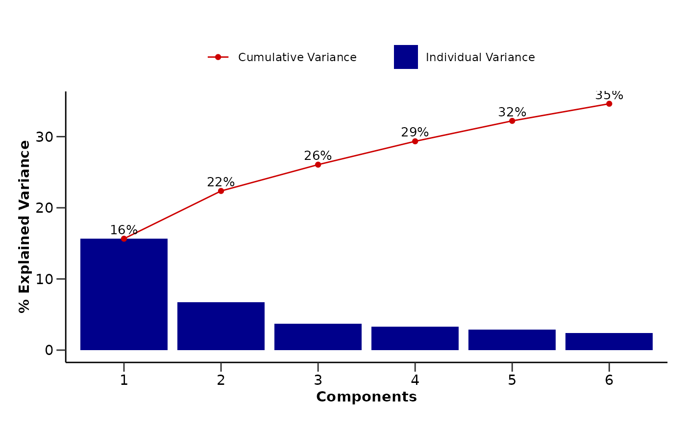
do_umap(imputed_data,
clean_metadata,
color = "Disease",
palette = "cancers12",
impute = FALSE)
#> $umap_res
#> # A tibble: 586 × 3
#> DAid UMAP1 UMAP2
#> <fct> <dbl> <dbl>
#> 1 DA00001 -2.08 0.679
#> 2 DA00002 1.76 2.01
#> 3 DA00003 -1.82 -2.12
#> 4 DA00004 -2.14 -1.92
#> 5 DA00005 -2.19 0.744
#> 6 DA00006 1.27 -0.682
#> 7 DA00007 -3.37 -1.35
#> 8 DA00008 1.66 -0.930
#> 9 DA00009 -1.44 -0.635
#> 10 DA00010 1.98 2.20
#> # ℹ 576 more rows
#>
#> $umap_plot
We will perform another QC check to ensure that everything is as expected after cleaning and imputing the data.
qc_data <- qc_summary_data(imputed_data, wide = TRUE, threshold = 0.7)
#> [1] "Summary:"
#> [1] "Note: In case of long output, only the first 10 rows are shown. To see the rest display the object with view()"
#> [1] "Number of samples: 586"
#> [1] "Number of variables: 100"
#> [1] "--------------------------------------"
#> [1] "character : 1"
#> [1] "numeric : 100"
#> [1] "--------------------------------------"
#> [1] "NA percentage in each column:"
#> # A tibble: 0 × 2
#> # ℹ 2 variables: column <chr>, na_percentage <dbl>
#> [1] "--------------------------------------"
#> [1] "NA percentage in each row:"
#> # A tibble: 0 × 2
#> # ℹ 2 variables: DAid <chr>, na_percentage <dbl>
#> [1] "--------------------------------------"
#> [1] "Normality test results:"
#> # A tibble: 100 × 4
#> Protein p_value adj.P.Val is_normal
#> <chr> <dbl> <dbl> <lgl>
#> 1 ARID4B 1.88e-22 1.88e-20 FALSE
#> 2 ATF2 5.93e-22 2.97e-20 FALSE
#> 3 ARTN 8.96e-22 2.99e-20 FALSE
#> 4 AZU1 6.28e-20 1.57e-18 FALSE
#> 5 APBB1IP 2.09e-17 4.17e-16 FALSE
#> 6 ADA 1.77e-15 2.95e-14 FALSE
#> 7 ADCYAP1R1 4.75e-15 6.78e-14 FALSE
#> 8 AOC1 6.02e-15 7.53e-14 FALSE
#> 9 AREG 1.67e-14 1.85e-13 FALSE
#> 10 ACE2 4.76e-13 4.76e-12 FALSE
#> # ℹ 90 more rows
#> [1] "--------------------------------------"
#> [1] "Protein-protein correlations above 0.7:"
#> Protein1 Protein2 Correlation
#> 1 AXIN1 ARHGEF12 0.76
#> 2 ARHGEF12 AXIN1 0.76
#> 3 ATP5IF1 AIFM1 0.75
#> 4 AIFM1 ATP5IF1 0.75
#> 5 ARHGEF12 AIFM1 0.72
#> 6 AIFM1 ARHGEF12 0.72
#> [1] "--------------------------------------"
#> [1] "Correlation heatmap:"
#> [1] "--------------------------------------"
qc_data$heatmap
qc_metadata <- qc_summary_metadata(clean_metadata, disease_palette = "cancers12")
#> [1] "Summary:"
#> [1] "Note: In case of long output, only the first 10 rows are shown. To see the rest display the object with view()"
#> [1] "Number of samples: 586"
#> [1] "Number of variables: 3"
#> [1] "--------------------------------------"
#> [1] "character : 3"
#> [1] "numeric : 1"
#> [1] "--------------------------------------"
#> [1] "NA percentage in each column:"
#> # A tibble: 0 × 2
#> # ℹ 2 variables: column <chr>, na_percentage <dbl>
#> [1] "--------------------------------------"
#> [1] "NA percentage in each row:"
#> # A tibble: 0 × 2
#> # ℹ 2 variables: DAid <chr>, na_percentage <dbl>
#> [1] "--------------------------------------"
#> Sex contains:
#> # A tibble: 19 × 3
#> Disease Sex n
#> <chr> <chr> <int>
#> 1 AML F 23
#> 2 AML M 27
#> 3 BRC F 50
#> 4 CLL F 21
#> 5 CLL M 27
#> 6 CRC F 28
#> 7 CRC M 22
#> 8 CVX F 50
#> 9 ENDC F 50
#> 10 GLIOM F 24
#> 11 GLIOM M 26
#> 12 LUNGC F 33
#> 13 LUNGC M 17
#> 14 LYMPH F 22
#> 15 LYMPH M 28
#> 16 MYEL F 15
#> 17 MYEL M 23
#> 18 OVC F 50
#> 19 PRC M 50
qc_metadata$barplot_Sex
qc_metadata$distplot_Age
#> Picking joint bandwidth of 6.06
Biomarker Identification
Differential Expression Analysis
We will run a differential expression analysis to identify potential
biomarkers. We will use do_limma() so that we will be able
to correct also for Age. This method will help us pinpoint proteins that
are significantly different between conditions. We will present only the
results for AML (Acute Myeloid Leukemia), BRC (Breast Cancer), and PRC
(Prostate Cancer).
de_res_aml <- do_limma(imputed_data,
clean_metadata,
case = "AML",
control = c("BRC", "PRC"),
correct = c("Sex", "Age"),
correct_type = c("factor", "numeric"),
only_female = "BRC",
only_male = "PRC")
#> Comparing AML with BRC, PRC.
#> Warning in do_limma_de(join_data, variable, case, control, correct,
#> correct_type, : 436 rows were removed because they contain NAs in Disease or
#> Sex, Age!
de_res_aml$de_results
#> # A tibble: 100 × 11
#> Assay logFC CI.L CI.R AveExpr t P.Value adj.P.Val B Disease
#> <chr> <dbl> <dbl> <dbl> <dbl> <dbl> <dbl> <dbl> <dbl> <chr>
#> 1 ADA 1.50 1.20 1.81 1.25 9.75 7.95e-18 7.95e-16 29.8 AML
#> 2 APEX1 1.84 1.43 2.24 0.583 8.97 8.98e-16 4.49e-14 25.2 AML
#> 3 AZU1 1.69 1.29 2.08 0.537 8.46 1.81e-14 6.04e-13 22.2 AML
#> 4 APBB1IP 1.19 0.840 1.53 0.00561 6.77 2.54e-10 6.35e- 9 12.8 AML
#> 5 ANGPT1 -1.66 -2.18 -1.13 1.38 -6.23 4.11e- 9 8.22e- 8 10.1 AML
#> 6 ARTN 0.921 0.615 1.23 0.648 5.95 1.74e- 8 2.89e- 7 8.67 AML
#> 7 ACTA2 0.711 0.458 0.964 1.52 5.55 1.21e- 7 1.73e- 6 6.77 AML
#> 8 ADGRG1 1.30 0.827 1.77 1.80 5.44 2.08e- 7 2.60e- 6 6.25 AML
#> 9 ADAMTS8 -0.809 -1.11 -0.506 0.420 -5.27 4.55e- 7 5.06e- 6 5.47 AML
#> 10 ANGPT2 0.741 0.459 1.02 1.06 5.18 6.73e- 7 6.73e- 6 5.10 AML
#> # ℹ 90 more rows
#> # ℹ 1 more variable: sig <chr>
de_res_aml$volcano_plot
#> Warning: ggrepel: 12 unlabeled data points (too many overlaps). Consider
#> increasing max.overlaps
de_res_brc <- do_limma(imputed_data,
clean_metadata,
case = "BRC",
control = c("AML", "PRC"),
correct = c("Sex", "Age"),
correct_type = c("factor", "numeric"),
only_female = "BRC",
only_male = "PRC")
#> Comparing BRC with AML, PRC.
#> Warning in do_limma_de(join_data, variable, case, control, correct,
#> correct_type, : 293 rows were removed because they contain NAs in Disease or
#> Sex, Age!
de_res_brc$de_results
#> # A tibble: 100 × 11
#> Assay logFC CI.L CI.R AveExpr t P.Value adj.P.Val B Disease
#> <chr> <dbl> <dbl> <dbl> <dbl> <dbl> <dbl> <dbl> <dbl> <chr>
#> 1 ADA -1.95 -2.39 -1.52 1.35 -8.92 1.72e-13 1.72e-11 20.3 BRC
#> 2 AZU1 -2.57 -3.16 -1.98 0.472 -8.66 5.28e-13 2.64e-11 19.2 BRC
#> 3 APEX1 -2.02 -2.58 -1.46 0.629 -7.17 3.97e-10 1.32e- 8 12.6 BRC
#> 4 APBB1IP -1.39 -1.90 -0.881 0.0190 -5.43 6.22e- 7 1.56e- 5 5.37 BRC
#> 5 AHCY -1.42 -2.02 -0.831 2.08 -4.78 8.20e- 6 1.64e- 4 2.88 BRC
#> 6 ARTN -0.992 -1.42 -0.567 0.774 -4.65 1.35e- 5 2.25e- 4 2.41 BRC
#> 7 ABL1 -1.44 -2.07 -0.811 1.93 -4.54 2.00e- 5 2.86e- 4 2.00 BRC
#> 8 ACTA2 -0.816 -1.18 -0.449 1.61 -4.43 3.11e- 5 3.69e- 4 1.57 BRC
#> 9 B4GALT1 -0.856 -1.24 -0.470 0.798 -4.41 3.32e- 5 3.69e- 4 1.50 BRC
#> 10 ANGPT1 1.95 1.05 2.85 1.45 4.32 4.56e- 5 4.56e- 4 1.19 BRC
#> # ℹ 90 more rows
#> # ℹ 1 more variable: sig <chr>
de_res_brc$volcano_plot
de_res_prc <- do_limma(imputed_data,
clean_metadata,
case = "PRC",
control = c("BRC", "AML"),
correct = c("Sex", "Age"),
correct_type = c("factor", "numeric"),
only_female = "BRC",
only_male = "PRC")
#> Comparing PRC with BRC, AML.
#> Warning in do_limma_de(join_data, variable, case, control, correct,
#> correct_type, : 143 rows were removed because they contain NAs in Disease or
#> Sex, Age!
de_res_prc$de_results
#> # A tibble: 100 × 11
#> Assay logFC CI.L CI.R AveExpr t P.Value adj.P.Val B Disease
#> <chr> <dbl> <dbl> <dbl> <dbl> <dbl> <dbl> <dbl> <dbl> <chr>
#> 1 ADGRG1 -1.77 -2.38 -1.16 1.86 -5.74 1.52e-7 0.0000152 7.07 PRC
#> 2 APEX1 -1.68 -2.28 -1.07 0.539 -5.51 4.03e-7 0.0000202 6.12 PRC
#> 3 ADA -1.22 -1.68 -0.750 1.16 -5.19 1.45e-6 0.0000483 4.91 PRC
#> 4 AZU1 -1.29 -1.82 -0.761 0.600 -4.85 5.78e-6 0.000145 3.58 PRC
#> 5 ADAMTS8 0.967 0.538 1.40 0.446 4.48 2.33e-5 0.000421 2.23 PRC
#> 6 ATG4A 1.04 0.577 1.51 2.57 4.45 2.64e-5 0.000421 2.14 PRC
#> 7 ANGPT1 1.47 0.807 2.13 1.31 4.42 2.95e-5 0.000421 2.02 PRC
#> 8 ARTN -0.885 -1.32 -0.455 0.528 -4.09 9.90e-5 0.00124 0.863 PRC
#> 9 ATP6AP2 -0.664 -1.00 -0.326 -1.11 -3.90 1.92e-4 0.00214 0.236 PRC
#> 10 APBB1IP -0.979 -1.50 -0.456 -0.00713 -3.73 3.55e-4 0.00355 -0.329 PRC
#> # ℹ 90 more rows
#> # ℹ 1 more variable: sig <chr>
de_res_prc$volcano_plot
We can also summarize the results via plot_de_summary().
In order to use this function we need to store the results in a
list.
de_res <- list("AML" = de_res_aml,
"BRC" = de_res_brc,
"PRC" = de_res_prc)
de_summary <- plot_de_summary(de_res, disease_palette = "cancers12")
#> $AML
#> [1] "ADA" "APEX1" "AZU1" "APBB1IP" "ARTN" "ACTA2"
#> [7] "ADGRG1" "ANGPT2" "AHCY" "AGRP" "ARID4B" "B4GALT1"
#> [13] "ABL1" "AMFR" "ADM" "ATP6AP2" "ATP6V1F" "AREG"
#> [19] "ANGPTL4" "ACE2" "ATF2" "ADA2" "ATXN10" "ARHGAP25"
#> [25] "ARNT"
#>
#> $`BRC&PRC`
#> [1] "ANGPT1" "ADAMTS8" "ADGRG2"
#>
#> $BRC
#> [1] "ANGPT1" "ART3" "ADAMTS8" "ADAMTS13" "ADGRG2" "APP"
#>
#> $PRC
#> [1] "ADAMTS8" "ATG4A" "ANGPT1" "APOM" "ALPP" "ADGRG2" "AMY2B"
#> [8] "ALDH1A1" "ACAN" "AK1"
#>
#> $AML
#> [1] "ANGPT1" "ADAMTS8" "ADGRG2" "APOM" "ATG4A" "APP"
#> [7] "ADAMTS13" "ALPP" "ARHGEF12" "ACAN"
#>
#> $`BRC&PRC`
#> [1] "ADA" "AZU1" "APEX1" "APBB1IP" "AHCY" "ARTN" "ACTA2"
#> [8] "ANGPT2" "AGRP" "ARID4B" "ADGRG1"
#>
#> $BRC
#> [1] "ADA" "AZU1" "APEX1" "APBB1IP" "AHCY" "ARTN" "ABL1"
#> [8] "ACTA2" "B4GALT1" "ANGPT2" "AGRP" "ADA2" "ARID4B" "ADGRG1"
#> [15] "ACE2" "AMFR" "ADGRE5" "AARSD1" "ANGPTL1"
#>
#> $PRC
#> [1] "ADGRG1" "APEX1" "ADA" "AZU1" "ARTN" "ATP6AP2" "APBB1IP"
#> [8] "ANGPT2" "AGRP" "AREG" "ADM" "ARID4B" "ACTA2" "AHCY"
#> [15] "ANGPTL4"
de_summary$de_barplot
de_summary$proteins_df_up
#> # A tibble: 38 × 3
#> `Shared in` `up/down` Assay
#> <chr> <chr> <chr>
#> 1 AML up ABL1
#> 2 PRC up ACAN
#> 3 AML up ACE2
#> 4 AML up ACTA2
#> 5 AML up ADA
#> 6 AML up ADA2
#> 7 BRC up ADAMTS13
#> 8 BRC&PRC up ADAMTS8
#> 9 AML up ADGRG1
#> 10 BRC&PRC up ADGRG2
#> # ℹ 28 more rows
de_summary$upset_plot_up
de_summary$proteins_df_down
#> # A tibble: 33 × 3
#> `Shared in` `up/down` Assay
#> <chr> <chr> <chr>
#> 1 BRC up AARSD1
#> 2 BRC up ABL1
#> 3 AML up ACAN
#> 4 BRC up ACE2
#> 5 BRC&PRC up ACTA2
#> 6 BRC&PRC up ADA
#> 7 BRC up ADA2
#> 8 AML up ADAMTS13
#> 9 AML up ADAMTS8
#> 10 BRC up ADGRE5
#> # ℹ 23 more rows
de_summary$upset_plot_down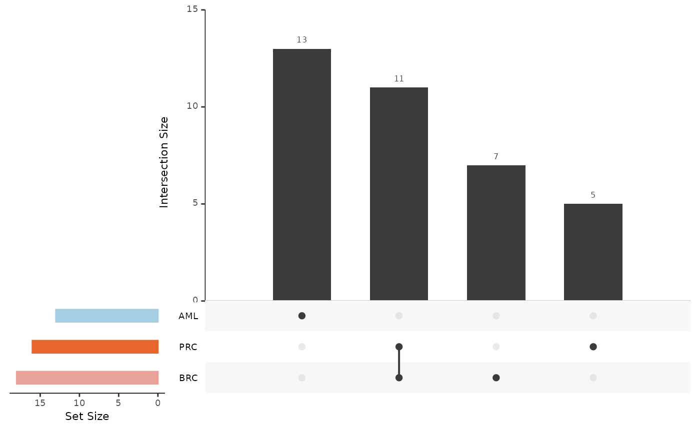
Lasso Machine Learning Classification Model
In addition to differential expression analysis, we will use a Lasso machine learning classification model to identify significant features. This model will help us understand which proteins are most predictive of the conditions being studied. Once again, we will present only the results for AML, BRC and, PRC.
lasso_res_aml <- do_rreg(imputed_data,
clean_metadata,
case = "AML",
control = c("BRC", "PRC"),
only_female = "BRC",
only_male = "PRC",
exclude_cols = c("Sex", "Age"),
type = "lasso",
palette = "cancers12",
subtitle = c("accuracy",
"sensitivity",
"specificity",
"auc",
"features",
"top-features"),
nfeatures = 12,
points = FALSE)
#> Joining with `by = join_by(DAid)`
#> Sets and groups are ready. Model fitting is starting...
#> Classification model for AML as case is starting...
lasso_res_aml$hypopt_res$hypopt_vis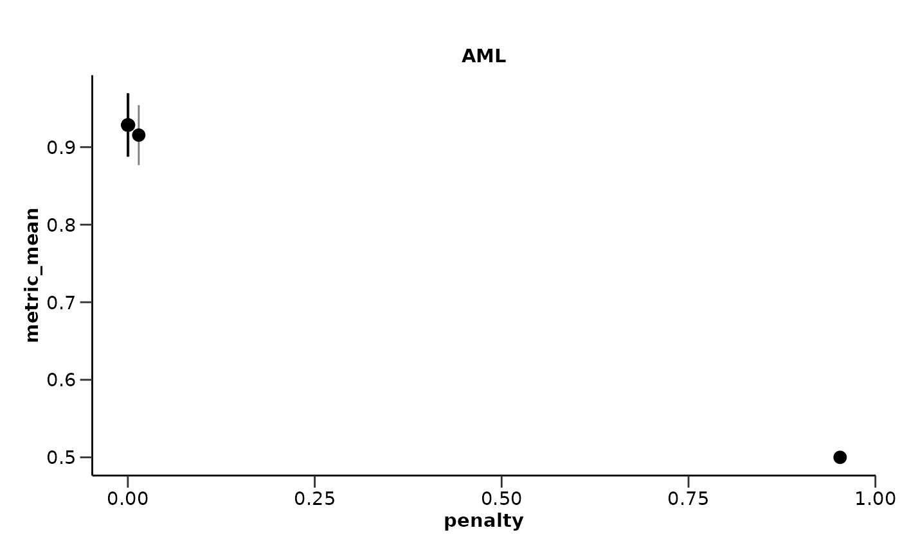
lasso_res_aml$testfit_res$metrics
#> $accuracy
#> [1] 0.74
#>
#> $sensitivity
#> [1] 0.71
#>
#> $specificity
#> [1] 0.77
#>
#> $auc
#> [1] 0.87
#>
#> $conf_matrix
#> Truth
#> Prediction 0 1
#> 0 10 3
#> 1 4 10
#>
#> $roc_curve
lasso_res_aml$var_imp_res$features
#> # A tibble: 23 × 4
#> Variable Importance Sign Scaled_Importance
#> <fct> <dbl> <chr> <dbl>
#> 1 ADGRG1 2.23 POS 100
#> 2 APEX1 1.88 POS 84.3
#> 3 ABL1 1.26 POS 56.8
#> 4 ANGPT1 1.15 NEG 51.6
#> 5 ALDH1A1 1.11 NEG 49.7
#> 6 ANXA11 1.07 NEG 48.3
#> 7 ADM 1.04 POS 46.8
#> 8 ADGRG2 0.988 NEG 44.4
#> 9 AGR3 0.890 NEG 40.0
#> 10 AHCY 0.654 POS 29.4
#> # ℹ 13 more rows
lasso_res_aml$var_imp_res$var_imp_plot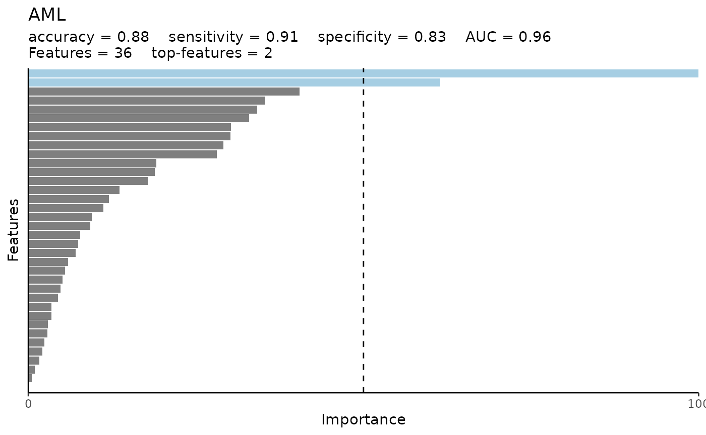
lasso_res_aml$boxplot_res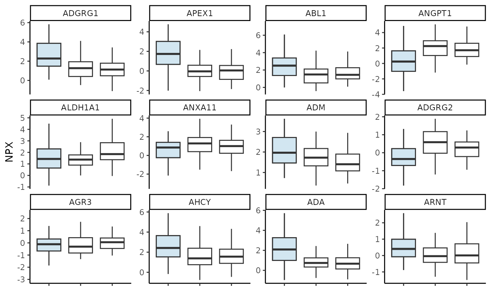
lasso_res_brc <- do_rreg(imputed_data,
clean_metadata,
case = "BRC",
control = c("AML", "PRC"),
only_female = "BRC",
only_male = "PRC",
exclude_cols = c("Sex", "Age"),
type = "lasso",
palette = "cancers12",
subtitle = c("accuracy",
"sensitivity",
"specificity",
"auc",
"features",
"top-features"),
nfeatures = 12,
points = FALSE)
#> Joining with `by = join_by(DAid)`
#> Sets and groups are ready. Model fitting is starting...
#> Classification model for BRC as case is starting...
lasso_res_brc$hypopt_res$hypopt_vis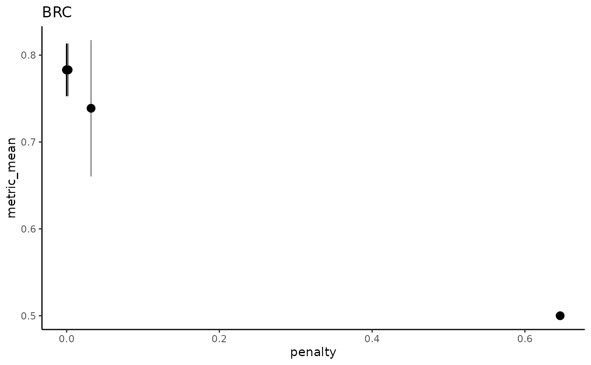
lasso_res_brc$testfit_res$metrics
#> $accuracy
#> [1] 0.85
#>
#> $sensitivity
#> [1] 0.69
#>
#> $specificity
#> [1] 1
#>
#> $auc
#> [1] 0.93
#>
#> $conf_matrix
#> Truth
#> Prediction 0 1
#> 0 9 0
#> 1 4 13
#>
#> $roc_curve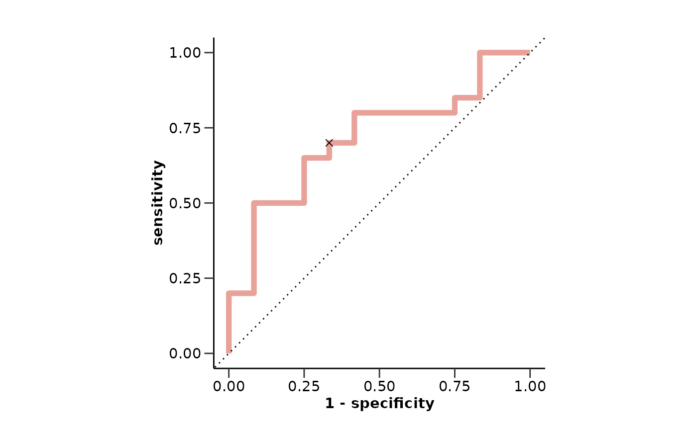
lasso_res_brc$var_imp_res$features
#> # A tibble: 13 × 4
#> Variable Importance Sign Scaled_Importance
#> <fct> <dbl> <chr> <dbl>
#> 1 ADA 3.37 NEG 100
#> 2 ANGPT1 1.81 POS 53.6
#> 3 ADGRG2 1.62 POS 48.1
#> 4 ANGPTL2 1.29 NEG 38.2
#> 5 ADAMTS13 1.23 POS 36.6
#> 6 ACTA2 0.659 NEG 19.5
#> 7 ATP6V1D 0.398 POS 11.8
#> 8 AMIGO2 0.278 POS 8.23
#> 9 APEX1 0.144 NEG 4.27
#> 10 B4GALT1 0.137 NEG 4.05
#> 11 ANXA5 0.118 NEG 3.51
#> 12 ADAMTS16 0.0411 POS 1.22
#> 13 ATP6V1F 0.0197 NEG 0.582
lasso_res_brc$var_imp_res$var_imp_plot
lasso_res_brc$boxplot_res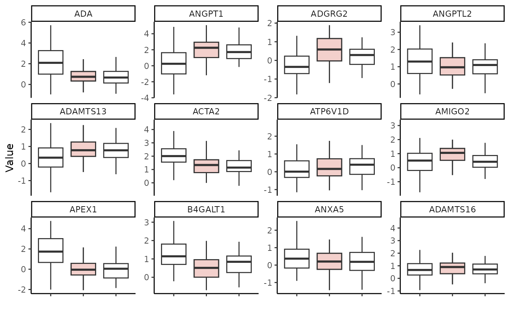
lasso_res_prc <- do_rreg(imputed_data,
clean_metadata,
case = "PRC",
control = c("BRC", "AML"),
only_female = "BRC",
only_male = "PRC",
exclude_cols = c("Sex", "Age"),
type = "lasso",
palette = "cancers12",
subtitle = c("accuracy",
"sensitivity",
"specificity",
"auc",
"features",
"top-features"),
nfeatures = 12,
points = FALSE)
#> Joining with `by = join_by(DAid)`
#> Sets and groups are ready. Model fitting is starting...
#> Classification model for PRC as case is starting...
lasso_res_prc$hypopt_res$hypopt_vis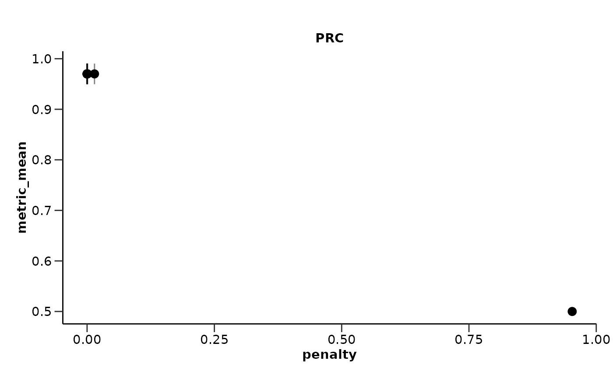
lasso_res_prc$testfit_res$metrics
#> $accuracy
#> [1] 0.73
#>
#> $sensitivity
#> [1] 0.69
#>
#> $specificity
#> [1] 0.77
#>
#> $auc
#> [1] 0.83
#>
#> $conf_matrix
#> Truth
#> Prediction 0 1
#> 0 9 3
#> 1 4 10
#>
#> $roc_curve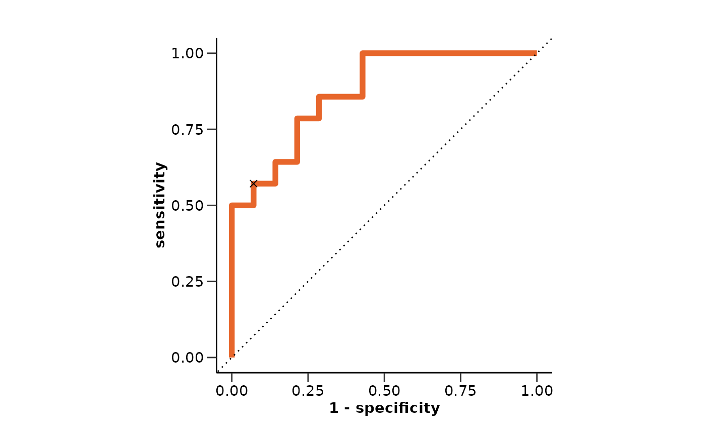
lasso_res_prc$var_imp_res$features
#> # A tibble: 24 × 4
#> Variable Importance Sign Scaled_Importance
#> <fct> <dbl> <chr> <dbl>
#> 1 ANGPT1 2.49 POS 100
#> 2 ALPP 1.53 POS 61.4
#> 3 APEX1 1.31 NEG 52.6
#> 4 ACP6 1.16 POS 46.7
#> 5 ATP6AP2 1.12 NEG 44.9
#> 6 APOM 1.06 POS 42.7
#> 7 ADM 0.667 NEG 26.8
#> 8 AMBN 0.650 POS 26.1
#> 9 AGRP 0.634 NEG 25.4
#> 10 ADAMTS15 0.580 NEG 23.3
#> # ℹ 14 more rows
lasso_res_prc$var_imp_res$var_imp_plot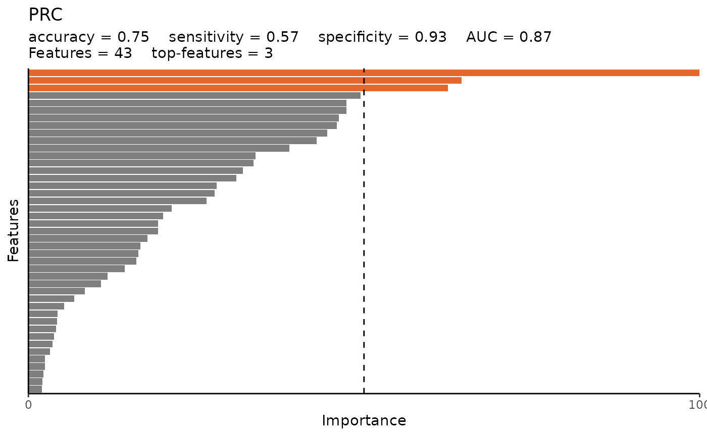
lasso_res_prc$boxplot_res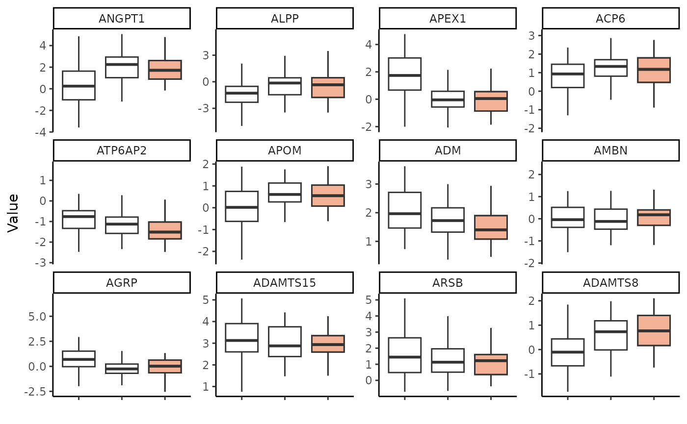
We can get a visual summary of the results via
plot_features_summary() too. In order to use this function
we need to store the results in a list.
lasso_res <- list("AML" = lasso_res_aml,
"BRC" = lasso_res_brc,
"PRC" = lasso_res_prc)
features_summary <- plot_features_summary(lasso_res, case_palette = "cancers12")
#> $AML
#> [1] ADGRG1 APEX1 ABL1 ANGPT1 ALDH1A1 ANXA11 ADM ADGRG2 AGR3
#> [10] AHCY ADA ARNT ACP6 ATXN10 AGER AGR2 ANXA5 AHSP
#> [19] ADAMTS8 ARID4B APLP1 ACTA2 ADGRE2
#> 100 Levels: AARSD1 ACAA1 ACAN ACE2 ACOX1 ACP5 ACTN4 ACY1 ADA2 ADAM15 ... ADGRG1
#>
#> $`AML&BRC&PRC`
#> [1] "APEX1" "ANGPT1" "ANXA5"
#>
#> $`AML&PRC`
#> [1] "APEX1" "ANGPT1" "ALDH1A1" "ADM" "ACP6" "ANXA5" "ADAMTS8"
#>
#> $`AML&BRC`
#> [1] "APEX1" "ANGPT1" "ADGRG2" "ADA" "ANXA5" "ACTA2"
#>
#> $BRC
#> [1] ADA ANGPT1 ADGRG2 ANGPTL2 ADAMTS13 ACTA2 ATP6V1D AMIGO2
#> [9] APEX1 B4GALT1 ANXA5 ADAMTS16 ATP6V1F
#> 100 Levels: AARSD1 ABL1 ACAA1 ACAN ACE2 ACOX1 ACP5 ACP6 ACTN4 ACY1 ... ADA
#>
#> $`BRC&PRC`
#> [1] "ANGPT1" "ADAMTS13" "AMIGO2" "APEX1" "ANXA5"
#>
#> $PRC
#> [1] ANGPT1 ALPP APEX1 ACP6 ATP6AP2 APOM ADM AMBN
#> [9] AGRP ADAMTS15 ARSB ADAMTS8 AIF1 ADH4 AMIGO2 ACAN
#> [17] ANGPTL7 ADAM8 ANXA5 ANGPTL4 AZU1 ALDH1A1 ADAMTS13 ADAM23
#> 100 Levels: AARSD1 ABL1 ACAA1 ACE2 ACOX1 ACP5 ACTA2 ACTN4 ACY1 ADA ... ANGPT1
features_summary$metrics_lineplot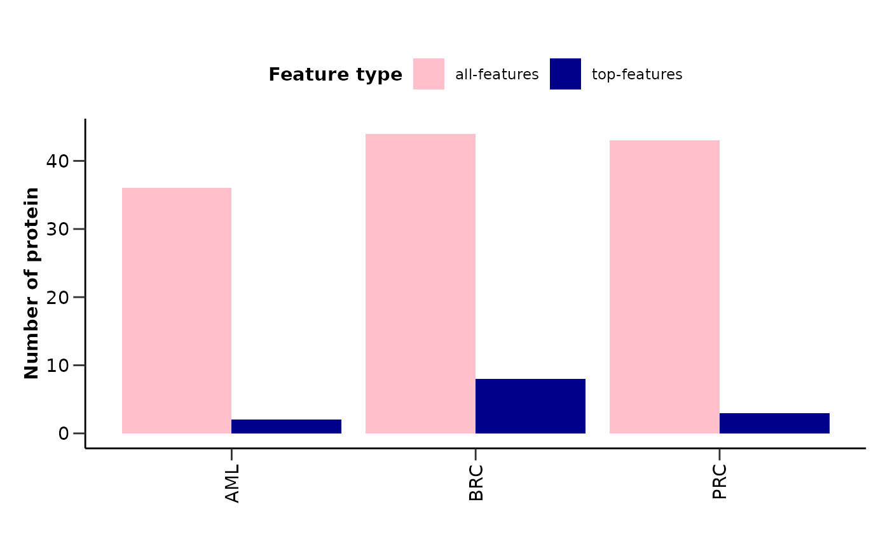
features_summary$features_barplot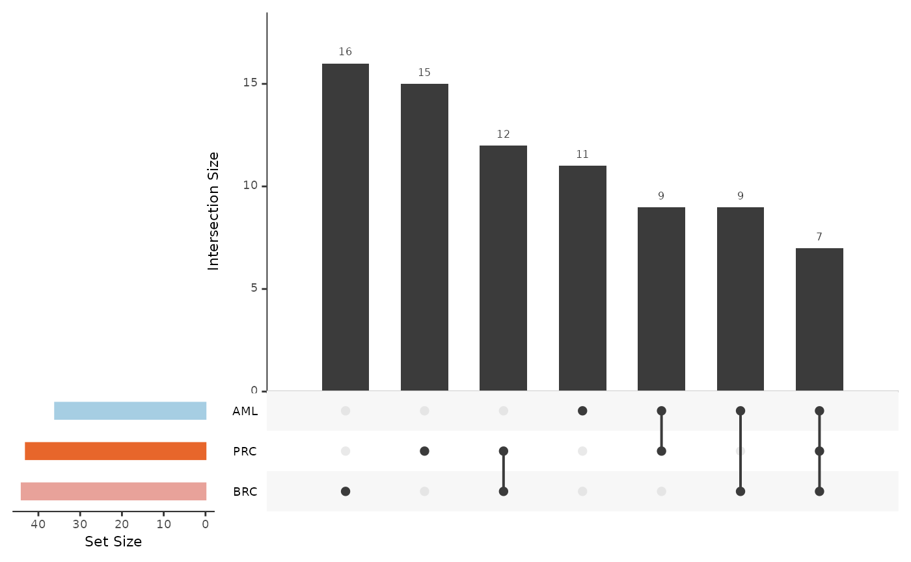
features_summary$features_df
#> # A tibble: 45 × 3
#> `Shared in` `up/down` Assay
#> <chr> <chr> <fct>
#> 1 PRC up ACAN
#> 2 PRC up ADAM23
#> 3 PRC up ADAM8
#> 4 BRC&PRC up ADAMTS13
#> 5 PRC up ADAMTS15
#> 6 BRC up ADAMTS16
#> 7 PRC up ADH4
#> 8 PRC up AGRP
#> 9 PRC up AIF1
#> 10 PRC up ALPP
#> # ℹ 35 more rows
features_summary$upset_plot_features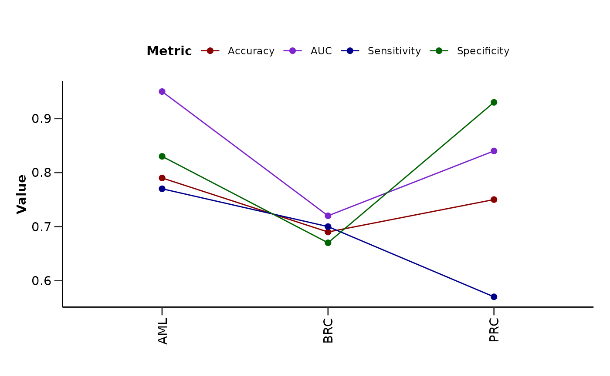
One step further
The final step involves performing an Over-Representation Analysis for the up-regulated proteins from differential expression, that are also identified as features by the ML model. In this example, we will use the Gene Ontology (GO) database and show the results only for AML.
📓 Remember that these data are a dummy-dataset with fake data.
# Extract the proteins identified by both DE and Lasso
de_proteins <- de_res_aml$de_results |>
dplyr::filter(sig == "significant up") |>
dplyr::pull(Assay)
lasso_proteins <- lasso_res_aml$var_imp_res$features |>
dplyr::filter(Scaled_Importance > 0) |>
dplyr::pull(Variable)
intersect_proteins <- intersect(de_proteins, lasso_proteins)
# Perform ORA with GO database and visualize results
enrichment <- do_ora(intersect_proteins, database = "GO")
#> No background provided. When working with Olink data it is recommended to use background.
#>
#>
#> 'select()' returned 1:1 mapping between keys and columns
plot_ora(enrichment, intersect_proteins, ncateg = 5)
#> 'select()' returned 1:1 mapping between keys and columns
#> $dotplot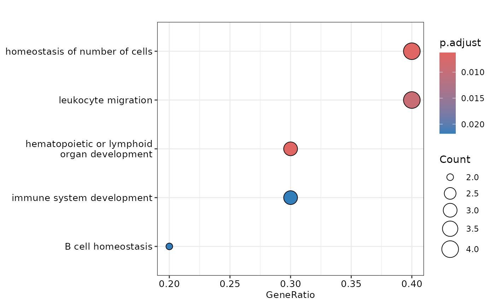
#>
#> $barplot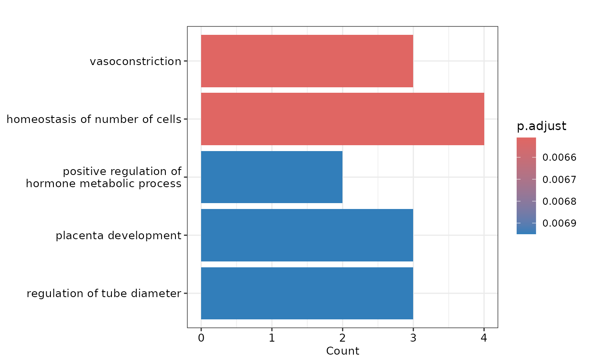
#>
#> $cnetplot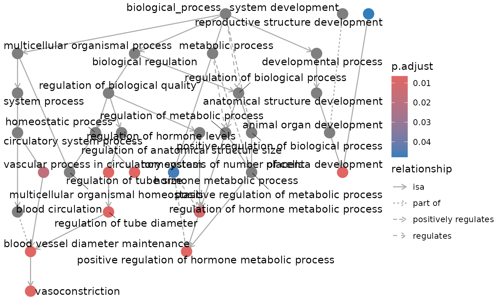